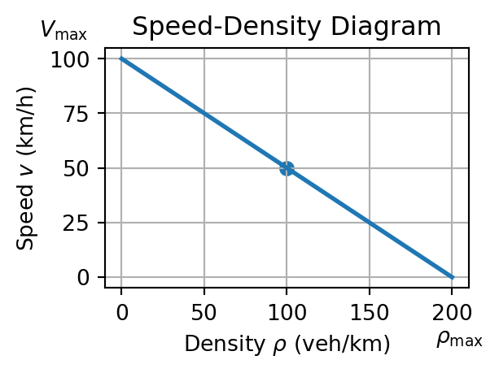
Lecture 8 — Traffic Flow Modelling
MATH3001(5005) — Applied Mathematical Modelling
Prof. Benchawan Wiwatanapataphee
Curtin University
22 Sep 2026
Goals today:
- Introduction
1.1 Why study traffic flow
1.2 Impact of non-recurrent events
1.3 What mathematical modelling offers
1.4 Traffic performance indicators - Basic traffic-flow concepts
2.1 Speed-Density-Flow Relationship (Greenshields model)
2.2 Triangular Fundamental Diagram - Continuity equations - Conservation of vehicle flows
3.1 Homogeneous roads section
3.2 Road sections with ramps
3.3 Changes in the number of lanes - Method of Characteristics
4.1 Characteristics fan
4.2 Traffic-signal release
1. Introduction
1.1 Why study traffic flow?
Traffic congestion is a critical issue as population and economic activity grow.
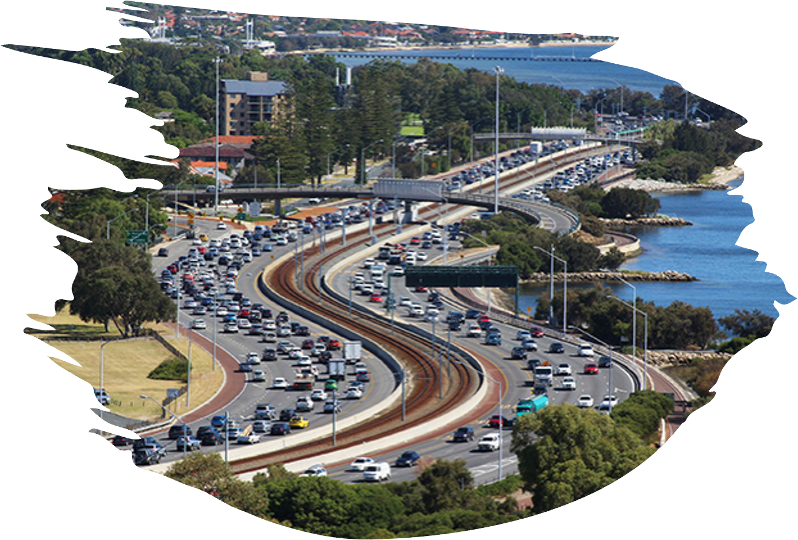
Speed of traffic flow is a key indicator of road performance.
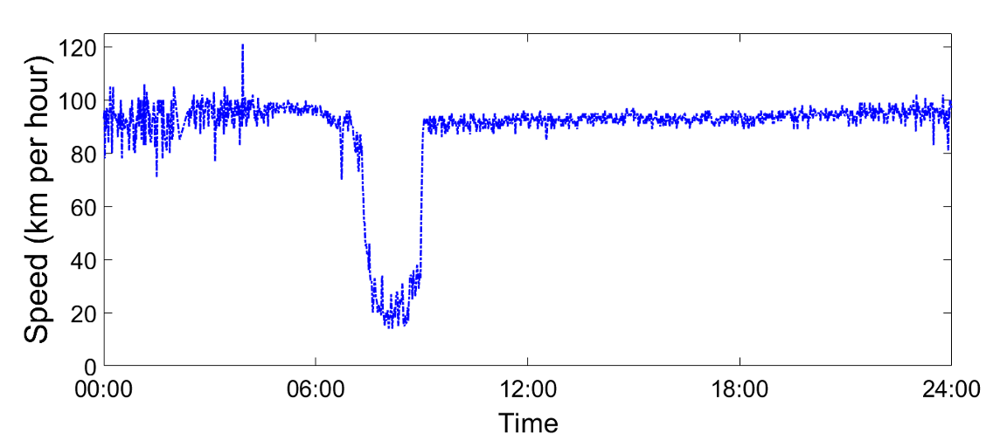
- Congestion is particularly severe during rush hours and under non-recurrent events such as rainfall, accidents, roadworks, and special events.
1.2 Impact of non-recurrent events
- Rainfall can reduce visibility and road friction. During incidents it can cause:
lower traffic speed
higher traffic density
lower flow rate.
Environment: Increase fuel consumption and greenhouse gas emissions.
Social: Increase stress, reduce quality of life and waste time for commuters.
Safety : Increase the likelihood of accidents and compromise road safety.
Economic: Traffic congestion in Australia was estimated to cost the economy \(18.9\) billion in 2016, with forecasts of up to \(38.8\) billion by 2031.
1.3 What mathematical modelling offers
Mathematical models help us understand, predict, and optimise traffic flow under varying conditions. They can quantify the effects of rainfall, accidents, and roadworks, and help develop strategies that mitigate congestion.
1.4 Traffic performance indicators
- Speed \(v\) (km/hour): average vehicle speed on a road segment.
- Density \(\rho\) (vehicles/km): number of vehicles per unit length of road.
- Flow rate \(q\) (vehicles/hour): number of vehicles passing a point per unit time.
- Travel time (hours): time needed to travel between two locations.
- Queue length (km): length of the vehicle queue at a bottleneck or intersection.
- Level of service: qualitative description from free flow to congested flow.
2. Basic traffic-flow concepts
- Microscopic models describe individual vehicles and their interactions.
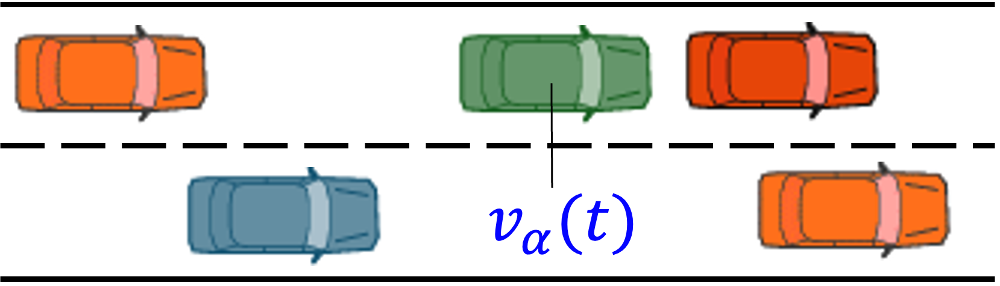
For an individual vehicle (particle) \(\alpha\), \[ \frac{dv_\alpha}{dt} = a_\alpha(s_\alpha,v_\alpha,\Delta v_\alpha) \]
- Macroscopic models describe aggregate variables such as \(\rho\), \(q\), and \(v\).
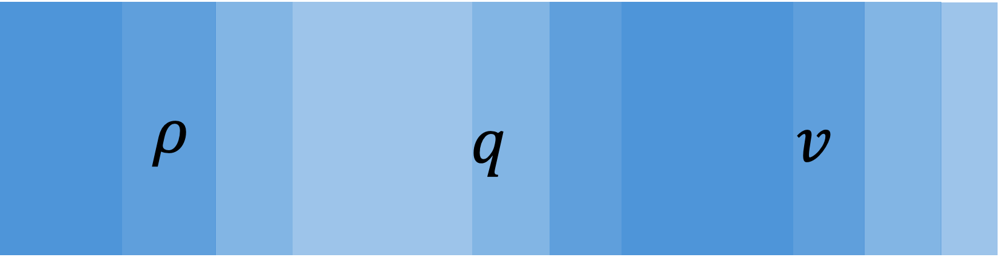
Focus on quantities per lane, the average, or the total.
- Mesoscopic models combine individual behaviour with aggregate traffic characteristics.
- Hybrid models combine modelling scales in different parts of a traffic system.
This lecture uses a macroscopic description.
2.1 Speed-Density-Flow relationship (Greenshields model)
The fundamental traffic quantities, density \(\rho\), flow rate \(q\), and speed \(v\), are
\[ \rho = \frac{\text{number of vehicles}}{\text{unit length}},\quad q = \frac{\text{number of vehicles}}{\text{unit time}},\quad v = \frac{\text{distance}}{\text{unit time}}. \]
The quantities are related by
\[ \hspace{5em}\color{blue}{q = \rho v} \tag{1}\]
Speed-Density relationship
\[ \color{blue}{v = V_{\max}\left(1-\frac{\rho}{\rho_{\max}}\right)} \tag{2}\]
Driver’s driving speed usually depends on the maximum allowed speed \(V_{\max}\) and density \(\rho\).
- Driver drive slower as the density \(\rho\) increases.
- On a clear road (\(\rho \rightarrow 0\)), drivers’\(v \rightarrow V_{\max}\).
- When cars are bumper-to-bumper (\(\rho=\rho_{\max}\)), \(v\rightarrow 0\).
Flow-Density relationship
\[ \color{blue}{q(\rho) = \rho V_{\max}\left(1-\frac{\rho}{\rho_{\max}}\right)} \tag{3}\]
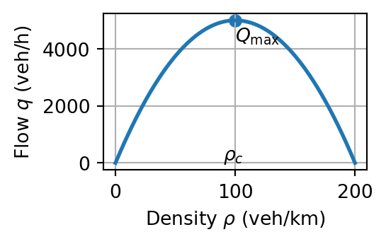
- Flow \(q \rightarrow 0\) as density \(\rho \rightarrow 0\) or \(\rho \rightarrow \rho_{\max}\).
- Two possible \(\rho\) values give the same flow \(q\).
- Flow is maximised at the critical density \(\rho_c\).
Fundamental diagrams
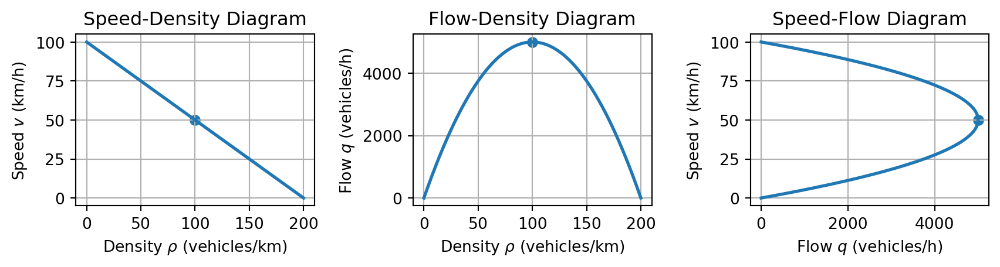
Example: a Greenshields flow-density model
- Using a Greenshields model, calculate the speed and flow for \(\rho = 50, 100, 150\) veh/km given \(V_{\max}=120\) km/h and \(\rho_{\max}=200\) veh/km.
From (3), \(\qquad q(\rho)=\rho V_{\max}\left(1-\dfrac{\rho}{\rho_{\max}}\right)=120\rho\left(1-\dfrac{\rho}{200}\right).\)
| \(\rho\) | \(v\) | \(q\) |
|---|---|---|
| 50 | 120(1-50/200)=90 | 50(90)=4500 |
| 100 | 120(1-100/200)=60 | 100(60)=6000 |
| 150 | 120(1-150/200)=30 | 150(30)=4500 |
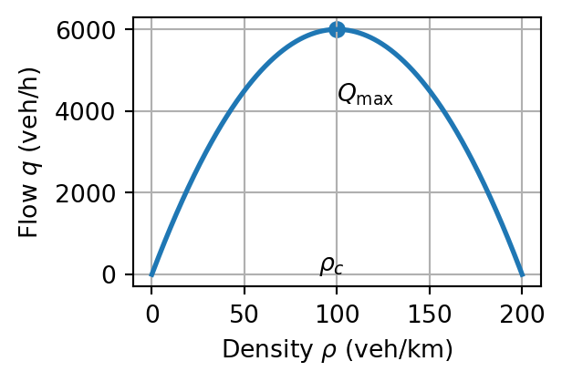
- Determine the critical density, maximum flow, and corresponding speed.
Since \(q(\rho)=120\rho-0.6\rho^2\), \(\dfrac{dq}{d\rho}=120-1.2\rho=0 \; \Longrightarrow \; \rho_c=100\) veh/km.
At this density, \(\qquad Q_{\max}=6000\) veh/h and \(v_c=60\) km/h.
2.2 Triangular fundamental diagram
We can also describe traffic flow using the triangular fundamental diagram, which is characterised by a piecewise linear relationship between flow and density.
\[ q = Q(\rho) = \min\{v_f\rho,\; w(\rho_j-\rho)\} \tag{4}\]
or
\[ Q(\rho) = \begin{cases} v_f \rho, & \rho \le \rho_c \\ w(\rho_j - \rho), & \rho > \rho_c, \end{cases} \]
- \(v_f\) is the free-flow speed (\(v_f=V_{\max}\)),
- \(\rho_c\) is the critical density,
- \(w\) is the backward congestion-wave speed,
- \(\rho_j\) is the jam density (\(\rho_j \approx \rho_\max\)),
- \(Q_{\max}\) is the maximum flow (road capacity).
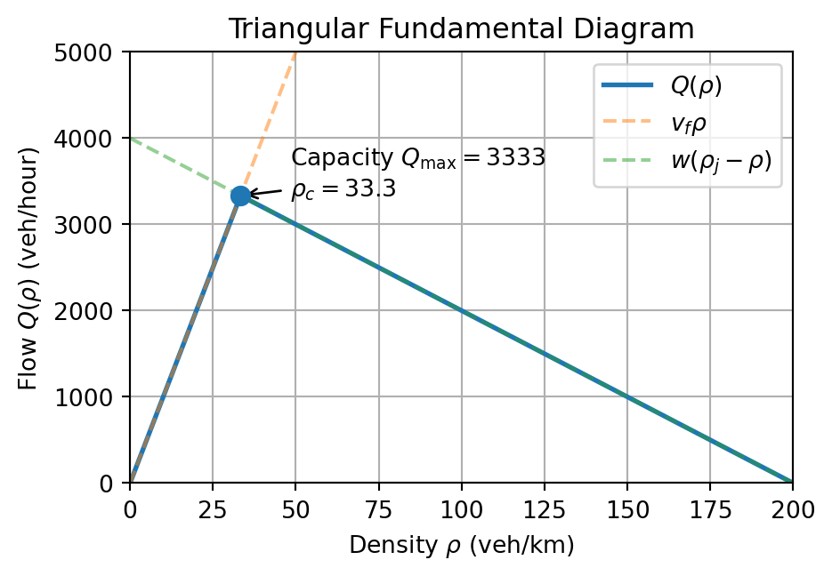
3. Continuity equations - Conservation of vehicle flows
Number of vehicles \(N(t)\) is conserved as they move along a road.
The continuity equation depends on the geometry of the road infrastructure.
- Homogeneous road sections: No ramps or lane changes.
- Sections with on-ramps or off-ramps: External inflows or outflows.
- Sections with lane changes: Changes in the number of lanes affect the density and flow.
Consider a road segment \([x_1,x_2]\) and let \(N(t)=\displaystyle\int_{x_1}^{x_2}\rho(x,t)\,dx\)
\[ \text{accumulation}=\text{inflow}-\text{outflow}+\text{external inflow}. \]
\[ \frac{d}{dt}\int_{x_1}^{x_2}\rho(x,t)\,dx =q(x_1,t)-q(x_2,t)+\int_{x_1}^{x_2}r(x,t)\,dx. \]
Flow is taken in the positive \(x\) direction: it enters at \(x_1\) and leaves at \(x_2\).
Units and assumptions
| Quantity | Meaning | Typical units |
|---|---|---|
| \(\rho(x,t)\) | vehicles per unit length | veh/km |
| \(q(x,t)\) | vehicles passing per unit time | veh/h |
| \(r(x,t)\) | vehicles added per unit length and time | veh/(km h) |
The one-dimensional model assumes that
- traffic is represented by averaged quantities;
- vehicles are conserved inside the road segment;
- lane changes are negligible or included in the averages;
- the road geometry is known.
The continuity equation alone does not determine \(q\). A constitutive relation such as \(q=Q(\rho)\) is needed to close the model.
The three macroscopic quantities satisfy \(q=\rho v\) and \(q=Q(\rho)\).
Substituting the flow-density relation into the homogeneous continuity equation gives
\[ \boxed{\frac{\partial \rho}{\partial t}+\frac{\partial Q(\rho)}{\partial x}=0.}\]
This is the first-order Lighthill–Whitham–Richards (LWR) model.
Using the chain rule,
\[ \boxed{\frac{\partial \rho}{\partial t}+Q'(\rho)\frac{\partial \rho}{\partial x}=0.}\]
- \(\rho_t\) describes local accumulation or depletion of vehicles.
- \(Q(\rho)_x\) describes the spatial change in traffic flow.
3.1 Homogeneous road section
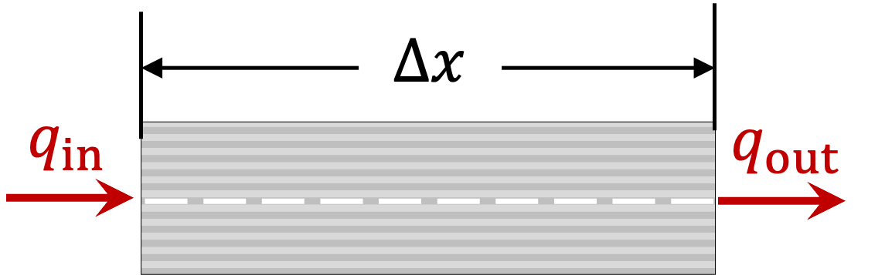
For a section from \(x\) to \(x+\Delta x\),
\[ N(t) = \rho(x,t)\,\Delta x. \]
Conservation gives \(\qquad \dfrac{dN}{dt} = q(x,t)-q(x+\Delta x,t).\)
Taking the limit \(\Delta x\to0\) gives
\[ \boxed{\dfrac{\partial \rho}{\partial t} + \dfrac{\partial q}{\partial x}=0}. \tag{5}\]
- The rate of change of density in time and the rate of change of flow in space must balance.
- This equation is valid for road-average quantities and does not account for lane-changing in lane-specific quantities.
Consider a section of length \(\Delta x\). Let \(\rho_{\mathrm{tot}}(x,t)\) be the total vehicle density across all lanes, and let \(q_{\mathrm{tot}}(x,t)\) be the total flow.
- The number of vehicles in the section is approximately
\[ \begin{aligned} n(t)&=\int_x^{x+\Delta x}\rho_{\mathrm{tot}}(x',t)\,dx' \\ &\approx \rho_{\mathrm{tot}}(x,t)\,\Delta x. \end{aligned} \]
- Conservation says that the rate of change of \(n(t)\) equals inflow minus outflow:
\[ \frac{d}{dt}\left[\rho_{\mathrm{tot}}(x,t)\Delta x\right] =q_{\mathrm{tot}}(x,t)-q_{\mathrm{tot}}(x+\Delta x,t). \]
- Divide by \(\Delta x\) and use a first-order difference quotient:
\[ \frac{\partial\rho_{\mathrm{tot}}}{\partial t} \approx-\frac{q_{\mathrm{tot}}(x+\Delta x,t)-q_{\mathrm{tot}}(x,t)}{\Delta x}. \]
- Taking \(\Delta x\to0\) gives the total-quantity continuity eq: \(\dfrac{\partial\rho_{\mathrm{tot}}}{\partial t}+\dfrac{\partial q_{\mathrm{tot}}}{\partial x}=0.\)
For \(n\) lanes, \(\rho_{\mathrm{tot}}=n\rho\) and \(q_{\mathrm{tot}}=nq\). If \(n\) is constant, divide by \(n\) to obtain the lane-average form (5).
When \(n=n(x)\) varies, division by \(n\) must be done after differentiating \(nq\); this is why the variable-lane equation contains \(\dfrac{1}{n(x)}\partial_x(nq)\).
Traffic jam clearing on homogeneous road
Consider a homogeneous road section. Initially, the road is congested with density \(\rho_0\) at \(t=0\). For \(t>0\), the density is prescribed by
\[ \rho(x,t)=\rho_0\left(1-\frac{x}{\Delta x}\right), \qquad 0<x<\Delta x. \]
Assume the Greenshields speed-density relation (3) and \(\rho_0=\rho_{\max}\). Find the speed \(v(x,t)\), the flow \(q(x,t)\), and the maximum flow.
Substitute the density into (3) yields
\[ v(x,t)=V_{\max}\left[1-\frac{\rho_0(1-x/\Delta x)}{\rho_{\max}}\right] =\frac{x}{\Delta x}V_{\max}. \]
- Thus \(v=0\) at \(x=0\) and increases linearly to \(V_{\max}\) at \(x=\Delta x\).
Using (1),
\[ q(x,t)=\rho_0\left(1-\frac{x}{\Delta x}\right) \frac{x}{\Delta x}V_{\max} =\rho_0V_{\max}\frac{x}{\Delta x}\left(1-\frac{x}{\Delta x}\right). \]
- The flow is zero at both ends of the clearing region and is largest inside it.
Differentiate with respect to \(x\):
\[ \frac{dq}{dx}=\frac{\rho_0V_{\max}}{\Delta x^2} (\Delta x-2x). \]
Therefore,
\[ \frac{dq}{dx}=0\quad\Longrightarrow\quad x=\frac{\Delta x}{2}. \]
At this point,
\[ q_{\max}=\frac{\rho_0V_{\max}}{4}, \qquad \rho\left(\frac{\Delta x}{2},t\right)=\frac{\rho_0}{2}. \]
The maximum flow occurs halfway through the transition from jam density to an empty road, and it is denoted by \(q_{\max}\).
For the complete piecewise picture, the jam region \(x\leq0\) has \(\rho=\rho_0\) and \(v=0\), while the empty region \(x\geq\Delta x\) has \(\rho=0\) and \(q=0\).
Example 1: Homogeneous Road Section
Consider a traffic in a homogeneous road section is initially congested with a density \(\rho_0\) at \(t=0\). The traffic starts to ease at \(x=0\), causing the traffic flow to change such that the traffic density is given by
\[ \rho(x,t)=\rho_0\left(1-\frac{x}{\Delta x}\right), \qquad t>0. \tag{6}\]
- Derive the traffic velocity \(v(x,t)\).
- Determine where the density \(\rho(x,t)\) reaches zero and interpret its significance for traffic flow.
- Sketch the density function \(\rho(x,t)\) and the corresponding flow \(q(x,t)\) for \(t>0\).
- Determine and sketch the characteristics of the traffic flow in the \((x,t)\) plane.
- Derive the traffic velocity \(v(x,t)\).
Substitute (6) into (2), we have
\[ v=V_\max\left[1-\frac{\rho_0\left(1-\frac{x}{\Delta x}\right)}{\rho_0}\right]=\frac{xV_\max}{\Delta x} \]
- Determine where the density \(\rho(x,t)\) reaches
Solve (6) for \(x\) when \(\rho(x,t)=0\), we have \[ \rho(x,t)=\rho_0\left(1-\frac{x}{\Delta x}\right) = 0 \]
\[ \left(1-\frac{x}{\Delta x}\right) = 0 \quad \Longrightarrow \quad x = \Delta x \]
At \(x = \Delta x\), the traffic density reaches zero, indicating an empty road section.
This signifies the end of traffic jam or the beginning of free-flowing traffic.
- Sketch the \(\rho(x,t)\) and the corresponding \(q(x,t)\) for \(t>0\).
- Sketch \(\rho(x,t)\)
- For \(x<0\), the jam density is \(\rho_0=\rho_m\)
- For \(0\leq x\leq\Delta x\), the density decreases linearly from \(\rho_0\) to \(0\). \[ \rho(x,t)=\rho_0\left(1-\frac{x}{\Delta x}\right) = -\frac{\rho_0}{\Delta x}x+\rho_0 \]
- For \(x>\Delta x\), the density is zero, indicating an empty road section.
\[ \therefore \rho(x,t) = \begin{cases} \rho_0, & x<0,\\ \rho_0\left(1-\frac{x}{\Delta x}\right), & 0\leq x\leq\Delta x,\\ 0, & x>\Delta x \end{cases} \]
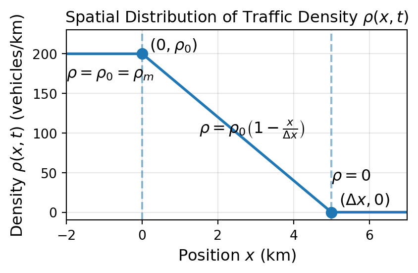
- Sketch \(q(x,t)\)
- For \(x \leq 0\), \(\rho_0=\rho_m\) and \(v_0=0\); therefore, \[ q(x,t)=\rho_0\cdot v_0=0 \]
- For \(0 < x \leq \Delta x\), substitute \(v(x,t)\) from part (a) yields \[ \begin{aligned} q(x,t) &=\rho(x,t)\cdot v(x,t) = \rho_0 \left(1-\frac{x}{\Delta x}\right) \cdot \frac{xV_\max}{\Delta x} \\ q'(x,t) &= \frac{\rho_0 V_\max}{(\Delta x)^2} (\Delta x-2x) = 0 \Rightarrow x=\Delta x/2 \\ Q_\max &= (\rho V_\max)/4 \text{ at } x=\Delta x/2 \end{aligned} \]
- For \(x > \Delta_x\), \(q(x,t) = 0\).
\[ \begin{aligned} \therefore q(x,t)=\begin{cases} 0, & x \leq 0 \\ \rho V_\max\left[1-\frac{\rho}{\rho_0}\right] , & 0 < x \leq \Delta x \\ 0, & x > \Delta x \end{cases} \end{aligned} \]
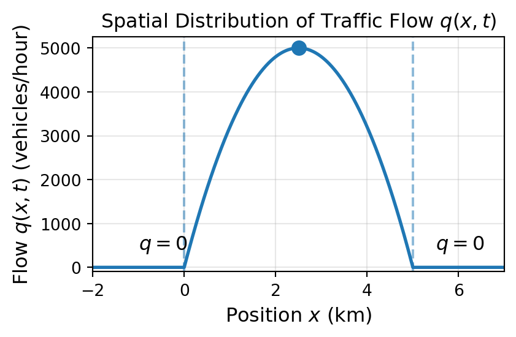
- Determine the characteristics of the traffic flow in the \((x,t)\) plane.
- For \(x \leq 0, \rho_0=\rho_m\) and \(v_0=0\) \[ \color{green}{x(t)=x_0}. \]
- For \(0 < x < \Delta x,\)
- From (a), \(v(x,t) = \dfrac{dx}{dt} = \dfrac{xV_\max}{\Delta x}\)
- Integrating \[ \begin{aligned} \int \frac{1}{x} \, dx &= \int \frac{V_\max}{\Delta x} \, dt \\ \ln(x) &= \frac{V_\max}{\Delta x} t + \ln(x_0) \end{aligned} \] \[ \color{blue}{x(t) = x_0 \exp(\frac{V_\max}{\Delta x} t)} \]
- For \(x \geq \Delta x, \color{red}{x(t)=x_0 + V_\max t}\)
\[ \therefore x(t) = \begin{cases} \color{green}{x_0}, & x \leq 0 \\ \color{blue}{x_0 \exp(\frac{V_\max}{\Delta x} t)}, & 0 < x < \Delta x \\ \color{red}{x_0 + V_\max t}, & x \geq \Delta x \end{cases} \]
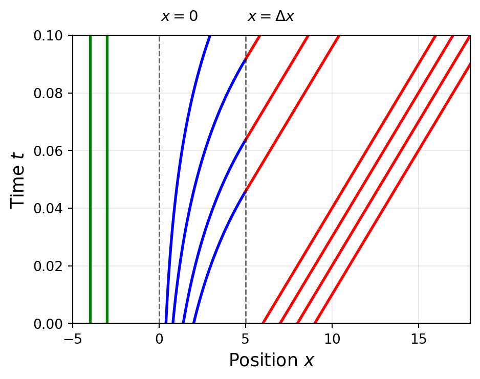
3.2 Road sections with ramps
Let \(r(x,t)\) be the net inflow per unit length. The continuity equation becomes
\[ \boxed{\frac{\partial \rho}{\partial t} + \frac{\partial q}{\partial x}=r(x,t)}, \tag{7}\]
\[ r(x,t) = \begin{cases} \dfrac{q_r}{n \cdot L}, & x \text{ at merging or diverging zones},\\ 0, & \text{otherwise}, \end{cases} \]
where \(q_r\) is the ramp flow, \(n\) is the number of lanes, and \(L\) is the ramp length.
- An on-ramp contributes positive flow; an off-ramp contributes negative flow.
The source term \(r(x,t)\) represents the net exchange of vehicles:
- on-ramp adds vehicles, so \(r>0\);
- off-ramp removes vehicles, so \(r<0\).
The main-road flow changes as vehicles enter or leave the road section.
- Integrating the ramp equation over \([x_1,x_2]\) gives
\[ \frac{dN}{dt}=q(x_1,t)-q(x_2,t)+\int_{x_1}^{x_2}r(x,t)\,dx. \]
- Thus a ramp changes the total number of vehicles in the control volume, not merely the local density.
- In steady state, \(\rho_t=0\), so the main-road flow increases downstream when the net ramp contribution is positive.
- The ramp contribution can be positive (on-ramp) or negative (off-ramp), affecting the downstream flow accordingly.
- The effect of ramps is integrated into the overall traffic flow model through the source term \(r(x,t)\).
- The source term \(r(x,t)\) allows the model to account for complex traffic scenarios involving multiple ramps along the road.
An on-ramp adds demand to the main road. If the ramp inflow is \(r(x,t)\),
\[ \rho_t+q_x=r(x,t).\]
Ramp metering controls \(r\) so that the downstream flow remains below capacity:
\[ q_{\mathrm{main}}+q_{\mathrm{ramp}}\leq C_{\mathrm{downstream}}.\]
The controller must balance two queues:
- too little ramp flow leaves unused highway capacity;
- too much ramp flow creates a main-road queue;
- the target is to keep the main road near, but below, capacity.
For the numerical model in this lecture,
\[ C_{\mathrm{downstream}}\approx1928.6\text{ veh/h per lane}. \]
Multiple ramps along a road
For a steady road section,
\[ \frac{dq}{dx}=r(x). \]
The main-road flow rises after an on-ramp and falls after an off-ramp.
At each location, the net source is the sum of all ramp contributions:
\[ r(x,t)=r_1(x,t)+r_2(x,t)+r_3(x,t)+r_4(x,t). \]
Example: On-Ramp Traffic Flow
Consider a two-lane highway with an on-ramp of length \(350\) m.
- On-ramp flow: \(q_r=300\) vehicles/hour.
- Highway speed: \(v=90\) km/hour.
- Upstream density: \(\rho_0=25\) vehicles/km.
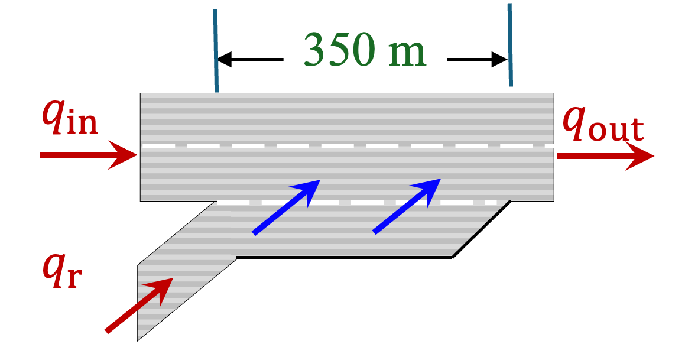
- Evaluate the steady-state density 250 m downstream of the ramp.
- Determine \(q_\text{out}\) downstream of the ramp (i.e., at \(x=\) 350 m).
- If the highway capacity is 1250 vehicles/hour/lane, evaluate whether a traffic jam occurs downstream of the ramp.
- Suppose that the flow rate from the on-ramp doubles to 600 vehicles/hour. How does this affect the downstream density and potential traffic congestion?
- Evaluate the steady-state density 250 m downstream of the ramp.
- From (7), \[ \frac{\partial \rho}{\partial t} + \frac{\partial q}{\partial x} = \frac{q_r}{n \cdot L} \]
- Steady-state assumption: \(\frac{\partial \rho}{\partial t} = 0\), so \[ \frac{\partial (\rho V)}{\partial x} = \frac{q_r}{n \cdot L}. \]
- Therefore, \[ \frac{\partial \rho}{\partial x} = \frac{q_r}{V \cdot n \cdot L} = \frac{300}{90 \cdot 2 \cdot 0.35} = 4.76 \text{ veh/km}^2. \]
- Integrate with respect to \(x\) to find the density 250 m downstream: \[ \rho(x) = 4.76x + \rho_0 = 4.76 \cdot 0.25 + 25 = 26.19 \text{ veh/km}. \]
- Therefore, the steady-state density 250 m downstream of the ramp increases from the upstream density \(\rho_0 = 25\) vehicles/km to \(\rho = 26.19\) vehicles/km.
- Determine \(q_\text{out}\) downstream of the ramp (i.e., at \(x=350\) m).
- From (a), \(\rho(x=0.35) = 4.76 \cdot 0.35 + 25 = 26.67 \text{ veh/km}\).
- Therefore, the downstream flow rate is \[ q_\text{out} = \rho V = 26.67 \cdot 90 = 2400 \text{ veh/hr}. \]
- If the highway capacity is 1250 veh/hr/lane, evaluate whether a traffic jam occurs downstream of the ramp.
- Highway capacity for 2 lanes: \(1250 \cdot n = 1250 \cdot 2 = 2500\) veh/hr.
- From (b) \(q_\text{out} = 2400 < 2500 =\) highway capacity.
- Therefore, a traffic jam does not occur downstream of the ramp.
- Suppose that the flow rate from the on-ramp doubles to \(600\) veh/hr. How does this affect the downstream density and potential traffic congestion?
- From (a) \[ \frac{\partial \rho}{\partial x} = \frac{q_r}{V \cdot n \cdot L} = \frac{600}{90 \cdot 2 \cdot 0.35} = 9.52 \text{ veh/km}^2. \]
- Integrate with respect to \(x\) to find the new downstream density: \[ \rho(x) = 9.52x + \rho_0 = 9.52 \cdot 0.35 + 25 = 28.332 \text{ veh/km} \]
- The new downstream flow rate is \[ q_\text{out} = \rho V = 28.332 \cdot 90 = 2550 > 2500 \text{ (highway capacity)}. \]
- Therefore, a traffic jam is likely to occur downstream of the ramp.
3.3 Changes in the number of lanes
Let \(n(x)\) denote the location-dependent number of lanes. For total quantities, (7) becomes
\[ \frac{\partial ({\color{red}{n}}\rho)}{\partial t}+\frac{\partial({\color{red}{n}}q)}{\partial x}={\color{red}{n}}r. \]
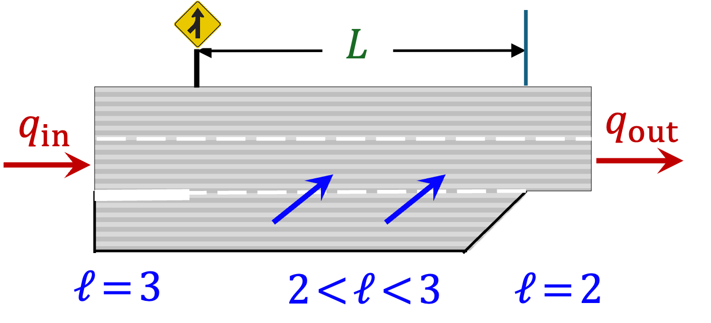
For lane-average quantities,
\[ \boxed{\frac{\partial \rho}{\partial t}+\frac{\partial q}{\partial x}=-\frac{q}{n} \frac{dn}{dx}}. \tag{8}\]
- The lane count \(n(x)\) can vary along the road.
- a lane addition creates a transition to larger \(n\);
- a lane drop creates a transition to smaller \(n\);
- the transition zone may have a non-integer effective lane count.
- Lane-average quantities are often more useful because traffic behaviour can vary significantly between lanes.
The conservation law must therefore be written for \(n\rho\) and \(nq\), or converted to lane-average quantities.
Example: Lane-drop scenario
Suppose the upstream demand is \(4500\) veh/h and the per-lane capacity is \(Q_{\max}=1928.6\) veh/h.
| Road section | Lanes | Total capacity |
|---|---|---|
| Upstream | \(3\) | \(3Q_{\max}=5785.8\) veh/h |
| Downstream | \(2\) | \(2Q_{\max}=3857.2\) veh/h |
- An upstream demand of \(4500\) veh/h is below the three-lane capacity but above the two-lane capacity.
- The lane drop therefore creates a queue downstream of the merge, and the queue boundary propagates upstream.
4. Method of characteristics
From the LWR equation to characteristic curves, we follow the method of characteristics to track how traffic density evolves along these curves.
Write the homogeneous LWR equation as
\[ \rho_t+q'(\rho)\rho_x=0,\quad q(\rho)=\rho v(\rho).\]
For a curve \(x=x(t)\), \(\displaystyle \frac{d\rho}{dt}=\rho_t+\rho_x\frac{dx}{dt}.\)
Choose \(\frac{dx}{dt}=q'(\rho)\). Then \(\displaystyle \frac{d\rho}{dt}=\rho_t+q'(\rho)\rho_x=0.\)
Along each characteristic, the density remains constant, and the characteristic speed is the slope of the flow-density curve.
Initial data and characteristic equations
Suppose \(\rho(x,0)=f(x)\). The characteristic starting at \(x=\xi\) satisfies
\(\rho(x,t)=f(\xi),\quad x-\xi=q'\bigl(f(\xi)\bigr)t.\)
Equivalently, \(x(\xi,t)=\xi+q'\bigl(f(\xi)\bigr)t.\)
For Greenshields flow,
\[ q(\rho)=V_{\max}\rho\left(1-\frac{\rho}{\rho_{\max}}\right), \qquad q'(\rho)=V_{\max}\left(1-\frac{2\rho}{\rho_{\max}}\right).\]
- Low-density characteristics move downstream; high-density characteristics move upstream.
4.1 Characteristic fan
Place a traffic light at \(x=0\). Initially, cars are stopped in \(x<0\) and the road ahead is empty in \(x>0\):
\[ \rho(x,0)= \begin{cases} \rho_{\max}, & x<0,\\ 0, & x>0. \end{cases} \]
For Greenshields flow, \(q'(0)=V_{\max}\) and \(q'(\rho_{\max})=-V_{\max}\).
- The boundary characteristics are
\[ x=-V_{\max}t,\qquad x=V_{\max}t.\]
- Inside the fan \(-V_{\max}t<x<V_{\max}t\),
\[ x=V_{\max}\left(1-\frac{2\rho}{\rho_{\max}}\right)t,\quad \therefore \quad \rho(x,t)=\frac{\rho_{\max}}{2}\left(1-\frac{x}{V_{\max}t}\right).\]
The complete solution for \(t>0\) is
\[ \rho(x,t)= \begin{cases} \rho_{\max}, & x\leq -V_{\max}t,\\[2pt] \dfrac{\rho_{\max}}{2}\left(1-\dfrac{x}{V_{\max}t}\right), & -V_{\max}t<x<V_{\max}t,\\[6pt] 0, & x\geq V_{\max}t. \end{cases} \]
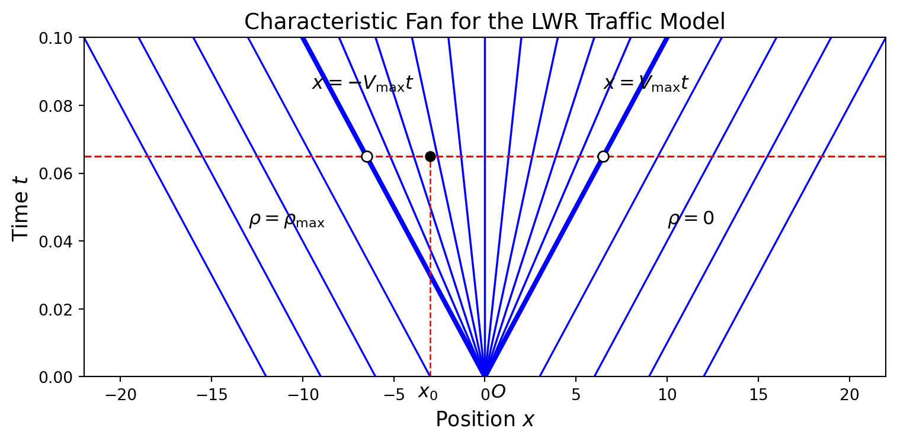
4.2 Traffic-signal release
When a traffic signal changes from red to green, a queue discharges from the stop line. The method of characteristics predicts how the release wave travels through the queue.
- the queue is described by high density and low speed;
- the empty road ahead is described by low density and high speed;
- the transition creates a rarefaction fan;
- vehicles begin moving when the signal change reaches their characteristic.
For a vehicle initially \(x_0\) upstream of the signal,
\[ t_{\mathrm{response}}=\frac{x_0}{V_{\max}}. \]
This estimate can be used to predict queue discharge time and the distance affected by a signal change.
Vehicle response to the signal
Consider a car initially at \(x=-x_0\), where \(x_0>0\). The left boundary characteristic is \(x=-V_{\max}t\). The car reaches the fan when
\[ -x_0=-V_{\max}t\quad\Longrightarrow\quad t=\frac{x_0}{V_{\max}}.\]
Therefore,
\[ v(x,t)=0\quad\text{for}\quad 0\leq t<\frac{x_0}{V_{\max}},\]
and the car begins to respond at \(t=x_0/V_{\max}\).
This is the time required for the traffic-signal change to reach the vehicle.
Example: vehicle velocity after the signal arrives
Let \(t_0=x_0/V_{\max}\). Before the signal change reaches the car, it remains stopped:
\[ V_{\mathrm{car}}(t)=0,\qquad 0\leq t<t_0. \]
For \(t\geq t_0\), the car lies in the rarefaction fan. Its trajectory satisfies
\[ \frac{dx}{dt}=v(x,t) =\frac{V_{\max}}{2}\left(1+\frac{x}{V_{\max}t}\right), \qquad x(t_0)=-x_0. \]
Solving gives
\[ x_{\mathrm{car}}(t)=V_{\max}t -2\sqrt{x_0V_{\max}t},\qquad t\geq t_0, \]
and therefore
\[ \boxed{V_{\mathrm{car}}(t)=V_{\max} \left(1-\sqrt{\frac{x_0}{V_{\max}t}}\right),\qquad t\geq t_0.} \]
At \(t=t_0\), the velocity is \(0\); as \(t\) increases, the car accelerates toward \(V_{\max}\).
Characteristics in the \((x,t)\) plane
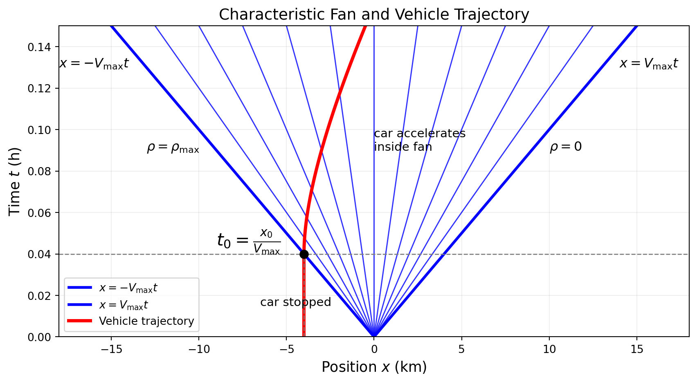
The vertical segment is the waiting period.
Its intersection with \(x=-V_{\max}t\) occurs at \(t_0\), exactly as predicted by the characteristic calculation.